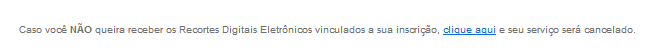

7. Rio De Janeiro - RJ (Empresa 30)
Responsável pelo Atendimento: Sabrina
Telefones para contato:
- Central OAB: (21) 2730-6525 ou (21) 2272-6150
- Cetral RD: (21) 4063-5658
- WhatsApp: (21) 96918-7142
E-mail para contato:
- rd_oabrj@recortedigital.adv.br
Contato interno:
- Ana Lucy: suporte@oabrj.org.br
O cadastro do Recorte Digital do estado do Rio de Janeiro é feito de forma automática pela OAB/RJ.
O prazo para cadastramento para novos inscritos na OAB é de 48h úteis.
Reativação de cadastro: Realizado apenas junto a OAB/RJ
- 7.2. Quantidade de e-mails cadastrados/alteração:
Pode ser cadastrado até 3 e-mails para o recebimento das publicações.
Alterações de e-mails são realizadas pela central de atendimento da OAB/RJ nos telefones (21) 2730-6525 ou (21) 2272-6150.
- 7.3. Procedimento para cadastro vencido:
Quando o advogado estiver com o cadastro vencido, ele deve entrar em contato com a central da OAB (21) 2730-6525 ou (21) 2272-6150.
- 7.4. Link para o acesso ao histórico de publicação:
http://historicooabrj.webjur.com.br/PortalOab
TODOS OS ESTADOS DO BRASIL.
A inclusão ou exclusão é realizada dentro do Portal do Recorte Digital (opção Estados Extras). Basta selecionar o estado desejado, descrever o motivo e incluir/excluir. Após a inclusão ou exclusão, deve-se aguardar o prazo de 48h para começar/parar o recebimento das publicações.
- 7.6. Período de armazenamento no Histórico:
As publicações ficam armazenadas por até 45 dias.
I. O cancelamento é realizado através de envio de solicitação ao e-mail do suporte do Recorte Digital do Rio de Janeiro: rd_oabrj@recortedigital.adv.br. O advogado deve identificar-se (nome completo e número de OAB) e informar o motivo do cancelamento.
II. Ou o advogado também tem a opção de excluir o cadastro através dos e-mails enviados pelo Recorte Digital no seguinte campo:

→ Mudar cadastro para lote 97, excluir/substituir e-mail existente pela letra 'A' e registrar o atendimento.
Somente no RD/RJ possui a opção de ESCRITÓRIO localizado no Histórico de Publicação. Esta opção permite o advogado criar um “ESCRITÓRIO VIRTUAL” para acompanhamento dos processos dos membros do escritório;
Basta criar e adicionar os advogados desejados. Estes aceitarão e assim começarão a receber o e-mail contendo as buscas de cada membro;
Exclusões de ESCRITÓRIO, caso não seja interesse do advogado inserido permanecer como membro, devem ser realizadas por e-mail. A exclusão deve ser enviada ao Raphael com todos os dados do gestor e do membro.
Obs.
"Prezado Dr. Artur, bom dia!
Esclareço que a inclusão de advogados na ferramenta Escritório, é realizado pelo gestor ou criador do grupo.
Informo que a atual gestora e criadora do grupo Miguel Lins Advogados Associados é a Drª. Larissa Azeredo Azevedo.
Para incluir no grupo existente um(a) advogado(a), a gestora deverá fazer o seguinte:
1 – Acessar o grupo através do portal do Recorte Digital (http://historicooabrj.webjur.com.br/PortalOab/).
2 – Convidar outros advogados a fazerem parte desse grupo.
Sendo este formado por advogados de uma de advogados, o gestor da sociedade deverá ser o responsável pelo convite e a manutenção do grupo. Advogados individuais não vinculados a uma sociedade de advogados serão os gestores dos grupos independentes que criarem;
3 – O(s) convidado(s) deverá(ão) aceitar a participação no grupo;
4 – Os advogados do grupo passarão a receber os Recortes Digitais Eletrônicos de Escritórios simultaneamente;
5 – Sendo do interesse do advogado, poderão ser feitas outras configurações de forma que:
a) O advogado decide se deseja receber todos os andamentos ou somente os seus;
É importante ressaltar que o Recorte Digital Eletrônico de Escritórios deve ser constantemente atualizado pelo(a) advogado(a) gestor, promovendo a inclusão ou a exclusão dos colegas do grupo.
À disposição."